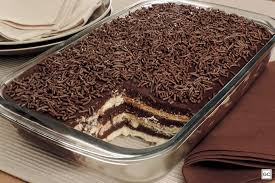

RECEITA PAVÊ DE BRIGADEIRO C/ OREO

ingredientes
2 pacotes biscoito de amido de milho
1 lata de creme de leite
1 lata de leite condensado
3 claras
200g de achocolatado (recomendo toddy)
200ml de leite
2 colheres de manteiga
1 pacote de granulado (de sua preferência)
1 pacote de bolacha Oreo
MODO DE PREPARO
creme Branco:
1°
Colocar todos os ingredientes na panela e levar ao fogo, mexendo sempre, até engrossar em ponto de mingau.
2°
Colocar em uma travessa.
3°
Molhar as bolachas no leite com achocolatado e colocar por cima do creme branco.
creme preto
4°
Colocar o leite condensado, chocolate em pó e a manteiga em uma panela
5°
Levar ao fogo e deixar engrossar em ponto de brigadeiro
6°
Esperar esfriar e colocar o creme de leite, mexer bem até incorporar todo o creme de leite no brigadeiro
7°
triturar as bolacha oreo
8°
montar as camadas
1° bolacha
2° creme
3° bolacha
4° creme
5° massa de brigadeiro
e leve a geladeira
agora é só esperar ficar pronto e está feito, uma receita de pavê de brigadeiro c/ oreo